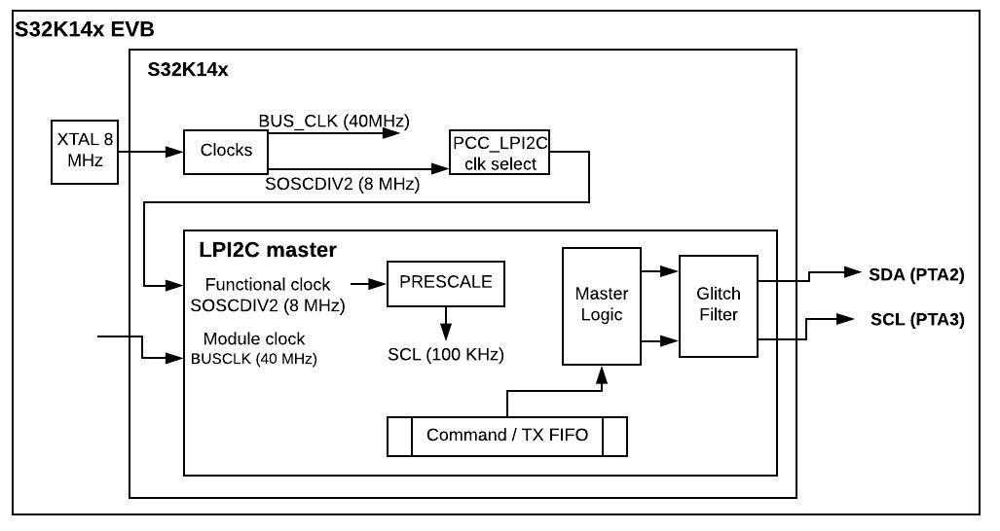

Description
Initialize I2C Module as Master and sends one single Address ignoring NACKS.

Design
- Disable watchdog
- System clocks: Initialize SOSC for 8 MHz, sysclk for 80 MHz, RUN mode for 80 MHz
- Initialize port pins:
- Enable clock to Port A module
- PTA2, PTA3: Configure for LPI2C_SDA and LPI2C_SCL
- Initialize LPI2C as master
- Enable clock source of SOSC_DIV2_CLK
- Set IGNACK mask in MCFGR1 reg.
- Set prescaler = 4,
- SCL_freq = Input_freq / (2^PRESCALER * (CLKLO + CLKHI + 2))
- Transmitter Water mark set to 0.
- Receiver Water mark set to 3.
- Enable LPI2C module.
Loop:
- Transmit ID.
Pins definitions:
| S32K1xx | Function |
| PTA2 | LPI2C0_SDA |
| PTA3 | LPI2C0_SCL |
Driver Functions:
main.c
#include "device_registers.h"
{
PCC->PCCn[PCC_PORTA_INDEX ]|=PCC_PCCn_CGC_MASK;
PORTA->PCR[2] |= PORT_PCR_MUX(3)
| PORT_PCR_PE_MASK
| PORT_PCR_PS(1);
PORTA->PCR[3] |= PORT_PCR_MUX(3)
| PORT_PCR_PE_MASK
| PORT_PCR_PS(1);
}
{
for(;;)
{
}
}
 1.8.15
1.8.15